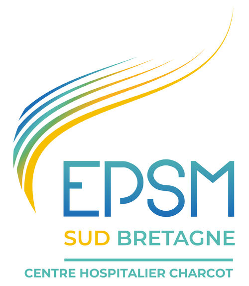

← Retour à l'accueil

Mon stage d'analyste de données médicales - EPSM Caudan
Présentation du stage
J'ai effectué un stage de trois mois à l'EPSM Bretagne Sud, au sein du Département d'Information Médicale (DIM), dans le cadre de ma seconde année de BUT Science des Données à l'IUT de Vannes. Cet établissement est spécialisé en psychiatrie, et mon stage s'est inscrit dans un contexte de migration logicielle et de réorganisation interne, rendant les projets complexes et très formateurs.
Objectifs et missions
- Produire des rapports annuels d'activité à destination des différents pôles cliniques.
- Produire des rapports annuels complets d'activité à destination des différentes unités de soins.
- Reconstituer un jeu de données cohérent à partir de deux bases distinctes (suite à un changement de logiciel métier).
- Adapter les analyses au contexte de fusion des pôles pour le rapport du pôle adulte.
- Répondre à des demandes ponctuelles de professionnels (médecins, cadres, direction).
- Analyser des activités transversales et peu standardisées.
- Partciper à la vie d'entreprise en participant aux réunions et prises de décisions
Compétences mobilisées
Ce stage m’a permis de mobiliser concrètement les quatre blocs de compétences du BUT Science des Données :
- Traiter des données à des fins décisionnelles : nettoyage, homogénéisation et structuration de jeux de données issus de SQL Developer, Access et Business Object.
- Analyser statistiquement les données : production d'indicateurs d'activité et synthèses à destination des services de soins.
- Développer un outil décisionnel : analyse de l'activité à travars différents rapports donc plusieurs crées par moi
- Valoriser une production dans un contexte professionnel : restitution claire, vulgarisation à des interlocuteurs non techniques, prise en compte du besoin utilisateur et interpétation de résultats.
J'ai également renforcé mes compétences transversales : autonomie, prise d'initiatives, rigueur et communication professionnelle.
Voici mon rapport de stage crée à l'issue de cette expérience.